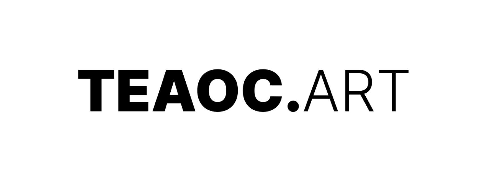
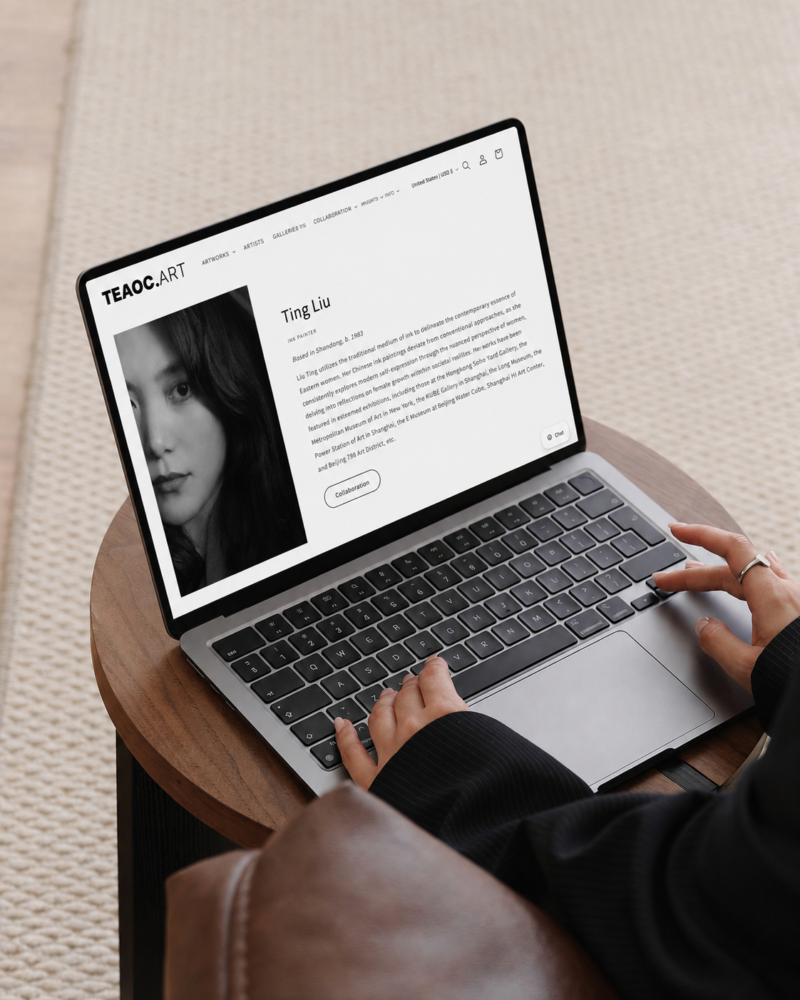
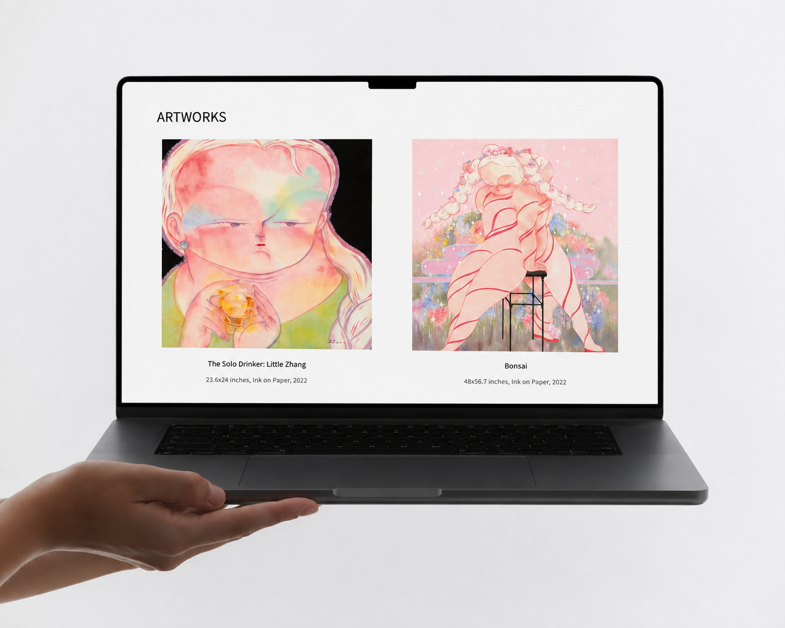
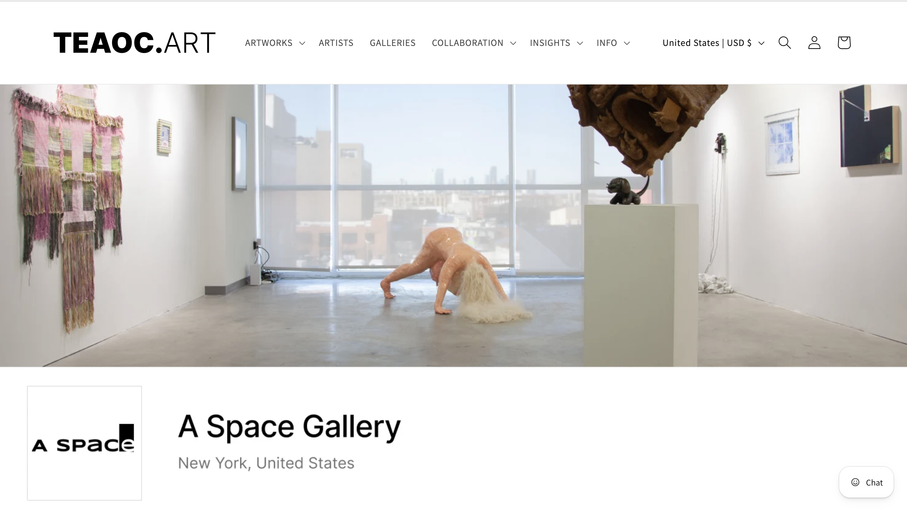
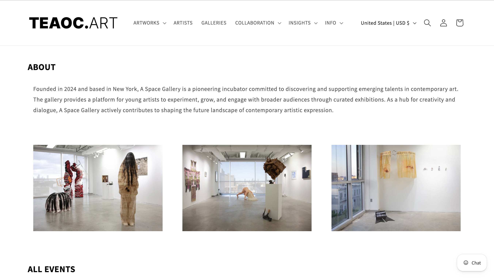
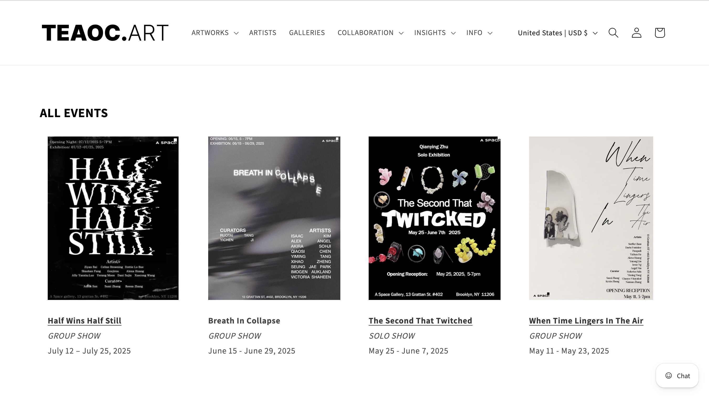
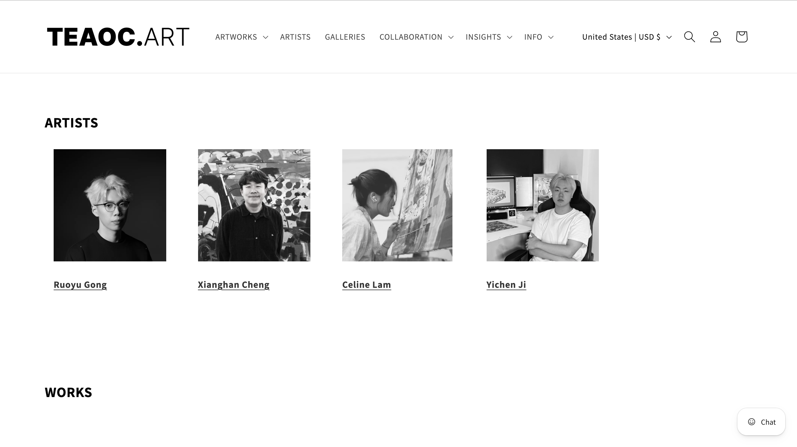
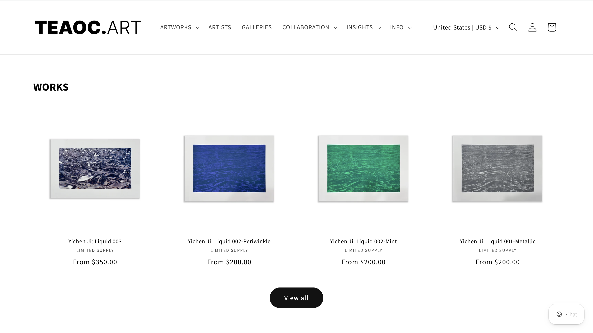
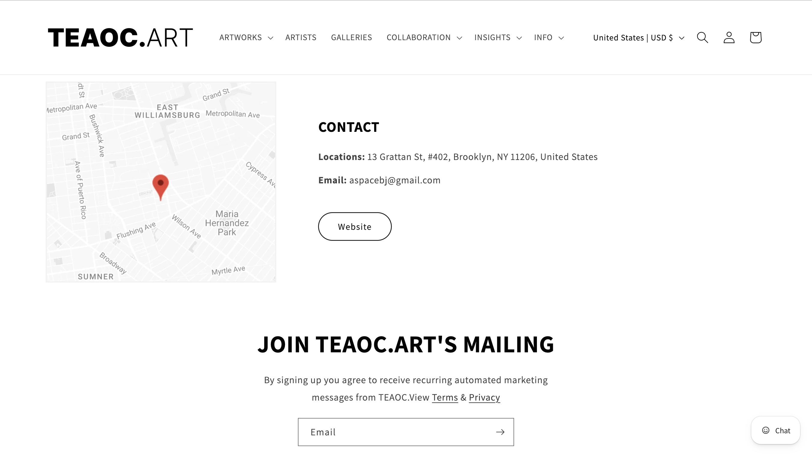
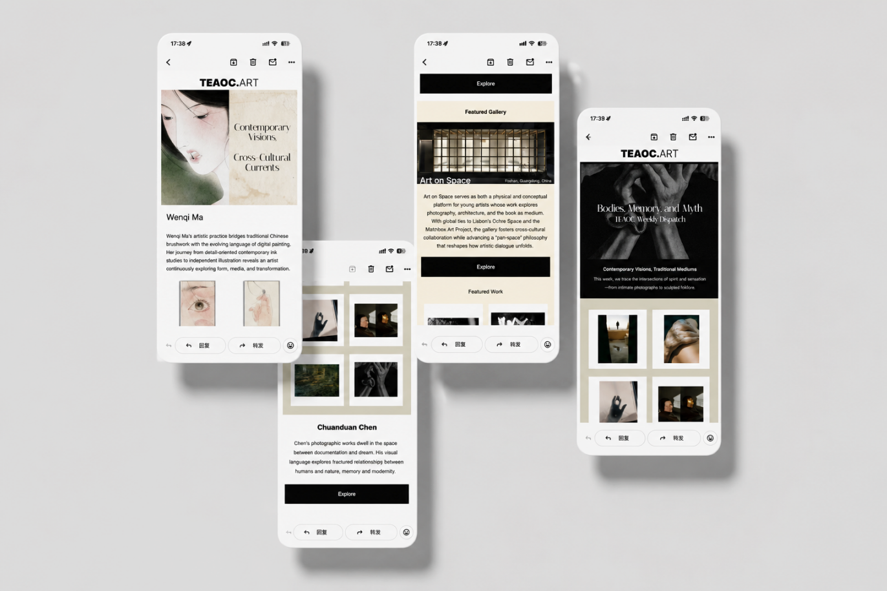

WEB DESIGN
Designed and adapted website pages based on new content needs, including layouts for partner galleries.

2025 ｜ Los Angeles
During my year at TEAOC.ART, I worked
across web design, content organization,
banners, social media, and email
campaigns, extending the existing
visual identity across digital touchpoints.
TEAOC.ART already had an established logo, visual
identity, and website system. My role was not to
rebrand it, but to maintain, extend, and organize its
digital experience within the existing framework.
Over the year, my work focused on five key areas:
Designed and adapted website pages based on new content needs, including layouts for partner galleries.
Organized artists, artworks, and related information to keep the growing website clear and structured.
Designed website banners and digital promotional visuals for exhibitions and artworks.
Designed Instagram content that maintained brand consistency while adapting to the fast-paced nature of social media browsing.
Designed email campaigns for exhibitions, artists, and events, creating a clear hierarchy between visual expression and information.
Beyond day-to-day website updates, I organized artist
and artwork content while refining page layouts
within TEAOC.ART’s existing website system. My work
focused on creating clear content relationships and
consistent visual hierarchy across artists, artworks,
exhibitions, and partner galleries.


As TEAOC.ART began collaborating with different
galleries, I contributed to the design of partner
gallery pages.
The pages needed to remain consistent with
TEAOC.ART’s overall website system while giving
each gallery a distinct space to present its identity,
artists, and selected works.






Email campaigns carry more information than
social media, including exhibition details, artist
features, event dates, and clear calls to action.
I used an editorial approach to organize longer
content through clear hierarchies of headlines,
body copy, imagery, and CTAs, while maintaining
TEAOC.ART’s artwork-focused visual language.

During my time at TEAOC.ART, I contributed to the
design of various digital touchpoints, including the
website, exhibition campaigns, social media, and
email. I expanded the brand’s content and pages
while maintaining a consistent overall visual experience.
This experience strengthened my ability to work within
an established brand system, manage a wide range of
visual content, and design across multiple platforms in
a professional environment.